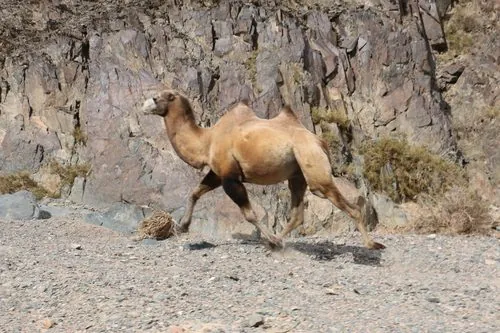

哺乳动物 · 动物界
野双峰驼 Camelus ferus

世界上最濒危的有蹄类之一，生活在新疆与蒙古的荒漠，能喝咸水、耐极端温差，全球野生个体仅约千头。
- 分类
- 门脊索动物门纲哺乳纲目偶蹄目科骆驼科属骆驼属
- 栖息环境
- 中亚荒漠戈壁，包括塔克拉玛干沙漠东缘与蒙古西南部荒漠
- 地理分布
- 中国新疆和蒙古国西南部的荒漠戈壁，为全球仅存的野生种群
- 保护级别
- IUCN 极危（CR）；中国国家一级保护动物
物种志
野双峰驼体长 2.4–3.2 米，肩高 1.8–2.0 米，体重 300–600 kg。它的体形比家养双峰驼更精瘦，驼峰较小，被毛为浅沙褐色至灰褐色，四肢细长，脚掌宽大，适合在松软沙地和戈壁行走；鼻孔可以闭合，眼睑多层，抵御风沙。
野双峰驼分布于中国新疆塔克拉玛干沙漠东缘和蒙古国西南部的荒漠戈壁，是世界上最濒危的有蹄类之一。它能耐受 -30℃ 至 40℃ 的温差，可饮用咸水，取食梭梭、骆驼刺和盐生植物，数周不饮水也能活动，嗅觉灵敏，能在干旱荒漠中寻找水源。野双峰驼结成 5–20 只的小群，由雄驼带领，春季产仔。由于盗猎、矿业开发和栖息地退化，全球野生个体仅约 1000 头，被列为极危，中国将其列为国家一级保护动物。
形态与习性
- 食性梭梭、骆驼刺等盐生植物，可饮用咸水
- 体长2.4–3.2 m，肩高 1.8–2.0 m
- 体重300–600 kg
- 寿命野外约 30–40 年
- 繁殖妊娠期约 12–13 个月，每胎 1 仔
- 耐温-30℃ 至 40℃
- 种群数量全球野生个体仅约 1000 头
趣味知识
- 野双峰驼能饮用咸水，取食盐生植物，是荒漠中的生存高手。
- 全球野生双峰驼仅剩约 1000 头，被列为极危物种。
- 它的鼻孔可以闭合，眼睑多层，能抵御荒漠风沙。
- 野双峰驼比家养双峰驼体形更精瘦，驼峰也更小。